On the other hand we have
which is the Hamiltonian. We note that it is the energy expressed in terms
of generalized coordinate and momentum that can be called Hamilton. Using the
Hamilton's equation, it can be easily proved that
Further we note that
In usual case,  and are not an explicit function of time,
thus we have
and are not an explicit function of time,
thus we have
Using these results, we have
Then using Eq. (35) we obtain
The first order equation of Eq. (192) is (noting that
 ,
,
 , and 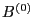 is time independent,
thus
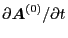,
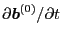, and
, and 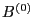 is time independent,
thus
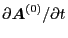,
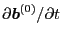, and
 are all zeros)
are all zeros)
 |
(194) |
In writing the above expression, we have used the fact that
here is taken by holding constant
, instead of holding constantnt
. In this case obviously
. If we calculate in the second
case, then we would have
,
since
in which the terms such as
would
explicitly contain . The second term on the right-hand side of Eq.
(![[*]](crossref.png) ) can be further calculated as
) can be further calculated as
| 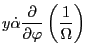 |
 |
|
|
| |
|
|
(196) |
Then we can use  and
and
 in the above equation,
yielding
in the above equation,
yielding
Here I have some important comments. First, we note that
is one of the components of the Euler-Lagrange equation, thus of
course can not be substituted into the original Lagrangian
 (if
we do this, we can no longer use the resulting Lagrangian as a correct
Lagrangian to obtain correct Euler-Lagrange equation). In contrast to this, it
is obvious we can use one component of the Euler-Lagrangian equation in
another component equation. Thus we can substitute
into Eq. (196) to get Eq. (197). Second, we also substitute into Eq. (196) in obtaining Eq. (197). This is
trivial since what we do is only to rewrite the final result in a different
form. However this kind of rewriting may be misleading to someone (including
me) because the new form can be viewed as being written in terms of a new
variable 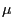, instead of the original variable 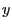. Of course, for this
case, no matter which variable the right-hand side of Eq. (197) is
understood to be written in terms of, the results are both correct. But it is
crucial to understand correctly which variables Lagrangian
is
written in terms of, since different choice of variables will give different
forms of perturbed Lagrangian because the perturbed Lagrangian is obtained by
keeping the independent variables constant.
(if
we do this, we can no longer use the resulting Lagrangian as a correct
Lagrangian to obtain correct Euler-Lagrange equation). In contrast to this, it
is obvious we can use one component of the Euler-Lagrangian equation in
another component equation. Thus we can substitute
into Eq. (196) to get Eq. (197). Second, we also substitute into Eq. (196) in obtaining Eq. (197). This is
trivial since what we do is only to rewrite the final result in a different
form. However this kind of rewriting may be misleading to someone (including
me) because the new form can be viewed as being written in terms of a new
variable 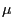, instead of the original variable 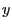. Of course, for this
case, no matter which variable the right-hand side of Eq. (197) is
understood to be written in terms of, the results are both correct. But it is
crucial to understand correctly which variables Lagrangian
is
written in terms of, since different choice of variables will give different
forms of perturbed Lagrangian because the perturbed Lagrangian is obtained by
keeping the independent variables constant.
Now I calculate the perturbed Lagrangian. The full Lagrangian is given by Eq.
(1), i.e.,
Then the perturbed and linearized version is (note that only the
electromagnetic field is perturbed, the independent variables are keep
constant)
Using
|
|
|
(199) |
in Eq. (198), we obtain
Using and
in the above equation, we obtain
My question is whether it is valid to substitute one of the Euler-Lagrangian
equation
into the perturbed Lagrangian.**wrong!!**
YouJun Hu
2014-05-19